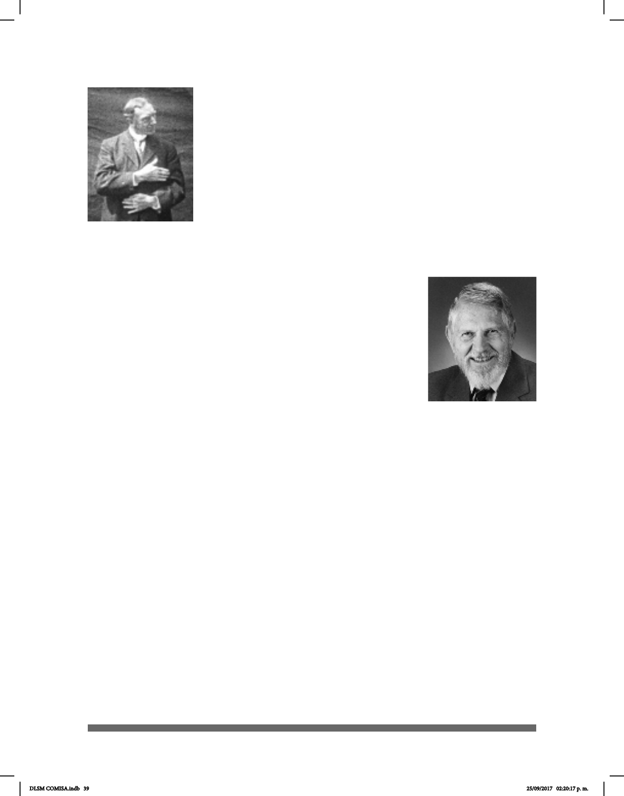

39
de los Estados Unidos de América (NAD)”(Oviedo, 2008).
Veditz estuvo interesado en la conservación de la Lengua de
Señas que estaba amenazada por otras propuestas de tipo
oralistas. Al iniciar la popularización del cine, logró que la NAD
financiara películas en Lengua de Señas.
En 1910 inició un proyecto en el que filmó a destacados
maestros tanto de oyentes como de niños sordos; estas
filmaciones son un registro invaluable de la Len-
gua de Señas en el mundo. Él afirma que “mientras
haya personas sordas sobre la tierra existirán las se-
ñas. El más noble don que Dios le ha dado a los Sordos.”
William Stokoe (1919-2000) señaló que la Lengua de Señas
tiene las condiciones lingüísticas para ser considerada un
idioma: vocabulario, gramática, estructura y sintaxis
propia. A partir de estos aspectos podría generar distintas
preposiciones por lo que declaró a la ASL una Lengua Ocial.
En 1960 siendo profesor de la Universidad de Gallaudet en
Washington D.C., publicó el primer libro que estudia la Lengua
de Señas Americana (ASL) desde una perspectiva lingüística.
Fue el primero en proponer que, como todas las palabras de
todas las lenguas, las señas están constituidas por un número
limitado y reducido de sonidos, que son los fonemas, que por sí
solos no tienen signicado, las lenguas de unidades que son los rasgos distintivos que
por sí solas tampoco tienen signicado.
Otros aspectos históricos y el gran Movimiento en la Universidad de Gallaudet
En el año de 1951, en Roma, se llevó a cabo el primer Congreso de la Federación
Mundial de Sordos (WFD); en él se reunieron 25 países para discutir y reunir los
estatutos del Sistema de Señas Internacional. Desde entonces, otros investigadores
han coincidido en que las Lenguas de Señas tienen reglas lingüísticas establecidas.
Por su parte, la Princesa Diana de Gales fue invitada como patrocinadora Real de la
Asociación Británica del Sordo (British Deaf Association BDA) en 1983 y estudió la
Lengua de Señas Británica. Con dicho patrocinio, la BDA tuvo más aceptación y
muchas personas se interesaron en aprender la lengua.
La famosa Universidad de Gallaudet que inicia sus actividades como tal en 1986 es
extraordinaria dado a que es la única en el mundo que desarrolla programas de
educación para estudiantes sordos.
George Veditz
William Stokoe
DLSM COMISA.indb 39 25/09/2017 02:20:17 p. m.